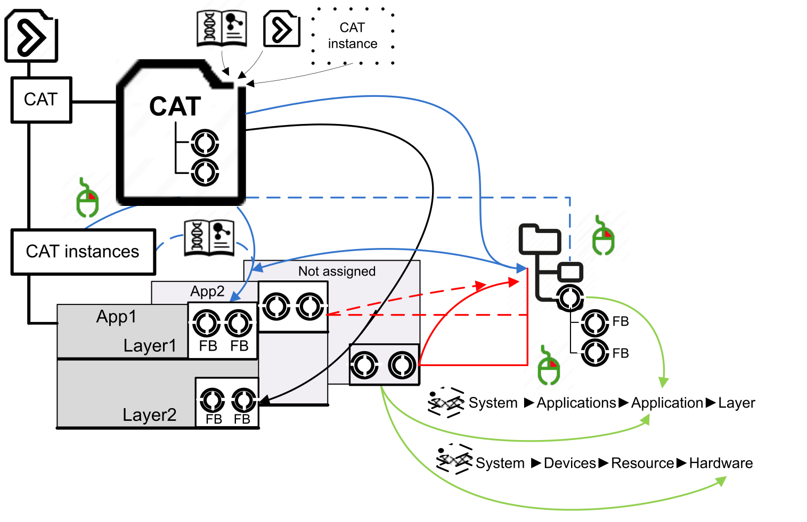
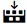

CAT Instances
From a CAT in the project, you can derive CAT instances which inherit its content (SubCATs). Each instance bears a unique name in the plant model and can receive an asset name or an HMI alias. (Refer to Creating and Localizing different CAT and Sub-CAT Instance Names.)
Instantiation & Assignment of a CAT
There are four ways to instantiate a CAT. You can:
-
Drag and drop the CAT unto an application Function Blocks Network editor (as any function block); the Define new name dialog appears with the Application Name and Layer Name fields prefilled with the destination.
NOTE: This does not work with a CAT of hardware type. -
Right-click the CAT Instances node in the Solution Explorer, select New Item... and select a CAT; the Define new name dialog appears. Select an application and layer. However, you can create a CAT instance before you use the CAT in the project. In this way, you can initially implement the canvas, even though you may not yet know in what application the CAT will be implemented later on. Later, drag and drop the existing CAT instance into an application.
-
Right-click in a Process view, as described in Creating a new CAT instance directly in the hierarchy view.
-
From an engineering source, use Asset Link for Bulk Engineering .
In the first three ways, enter a name that starts with a letter and excludes *, $, — and space.
-
Save, if you want to create the instance in the project AND have it already in the Function Block Network of the selected application and layer; all previous changes are saved as well
-
CAUTION Discard, if you want ONLY to create the instance in the project.
In both cases, the System tab closes.
The instances show in the CAT instances folder.
After instantiation, to assign a not assigned Application CAT instance, select in the System tab the Function Blocks Network editor:
-
localization in an Application: select Applications in the bread crumbs trail; then drag and drop there the CAT instance from the folder; the instance moves under the <selected application>-Application node.
-
localization in a Resource: select Devices in the bread crumbs trail; then drag and drop there the CAT instance from the folder; the instance stays in the original folder, but is duplicated there with the label of the resource (for example Res-DEV0-RES0-CAT3).
-
Depending on the
 > CAT Instances Sort setting, Not Assigned to System Application may be absent, and all the CAT instances put in one Application folder.
> CAT Instances Sort setting, Not Assigned to System Application may be absent, and all the CAT instances put in one Application folder.
-
a CAT instance of hardware type show greyed in the Solution Explorer.
-
If you have deleted, renamed or added a CAT instance, which is localized in the system, you have to save the changes to refresh the view of the Solution Explorer.
-
The project can be searched for unused CAT instances comfortably by using the Integrity Check
-
The CATs that contain a device can be instantiated, but their instances are not expandable in the Solution Explorer, and they feature NO function block when assigned to an application; they cannot be assigned to a resource.
-
Instantiation is in blue (the open book stands for a referenced library of CATs, which is an alternative source).
-
Assignment of an instance to the process view is in red.
-
Assignment of an instance to an application or a resource is in green.

Graphic part of a CAT instance
By dragging a CAT instance into an appropriate Canvas, a symbol, which has been added in the CAT, will be inserted in the canvas. If the CAT of the CAT instance that is dragged into the canvas contains several symbols, the Select generic symbol... dialog automatically opens and you must choose the appropriate symbol. For a quicker identification of the available symbols, you can customize the image, which is shown in the dialog. A description for this can be found in the topic Symbol Editor.

icon, then drag the CAT instance anew into the canvas.Faceplates, which are linked to the inserted symbol, can now be opened with the appropriate measure on the HMI (for example a click on a button or on an in- or output of an IO terminal image) during runtime (see Faceplate Editor).
If the inserted CAT is a hardware CAT the image of the hardware component can be shown, as far as it has been implemented graphically in the symbol of the CAT.
CAT instances node commands
A right click on the CAT instances node opens a context menu with the following commands:
|
Command |
Description |
|---|---|
| New Item... |
See above. |
| Info |
Opens an info box with a detailed list of the number of CAT instance types currently used in the project. |
| Export CAT instances |
Opens the Export CAT instances dialog window used to export CAT instances into an Excel file as detailed in the topic CAT Instances Operations. |
| Import CAT instances |
Opens a Windows folder to import an bulk edited Excel file containing updated CAT instances information. This operation is detailed in the topic CAT Instances Operations. |
CAT instance commands
A right click on an individual CAT instance in Solution Explorer opens a context menu with the following commands:
|
Command |
Description |
|---|---|
| Rename |
Enables you to rename CAT instances. The relevant CAT instance in the project (in an application or resource) will be renamed equally. Not available for CAT instances localized in devices. |
| Remove |
Removes the CAT instance from the folder CAT instances, provided that there does not exist an associated CAT instance in the system (in an application or resource). If the CAT is already used in the system the function block instance has to be removed from the application, and the CAT instance will also be removed from folder CAT instances. CAT instances which have been created separately and do not have an instance of the function block in the system, but have been used already in a canvas, can be removed if you click OK when the Delete CAT Instance message box asks you if you want to delete this instance from the System file. In this case, the graphical part of the CAT symbol will be removed from the canvas. If there are references to this CAT instance they will be listed in the Search Results pad automatically. Not available for CAT instances localized in devices. |
|
Go to type definition |
Shows the CAT, of which the instance has been created, in selected form within the Solution Explorer. |
|
Find all references |
Shows a list of the references of the CAT instance in the Search Results pad. By a click on a search result the relevant reference opens within the editor. |
|
Help |
Not available for CAT instances. Go to the CAT type (use Go to type definition) and use the Help entry of the context menu there (right-click the CAT) to open the documentation of the CAT. |